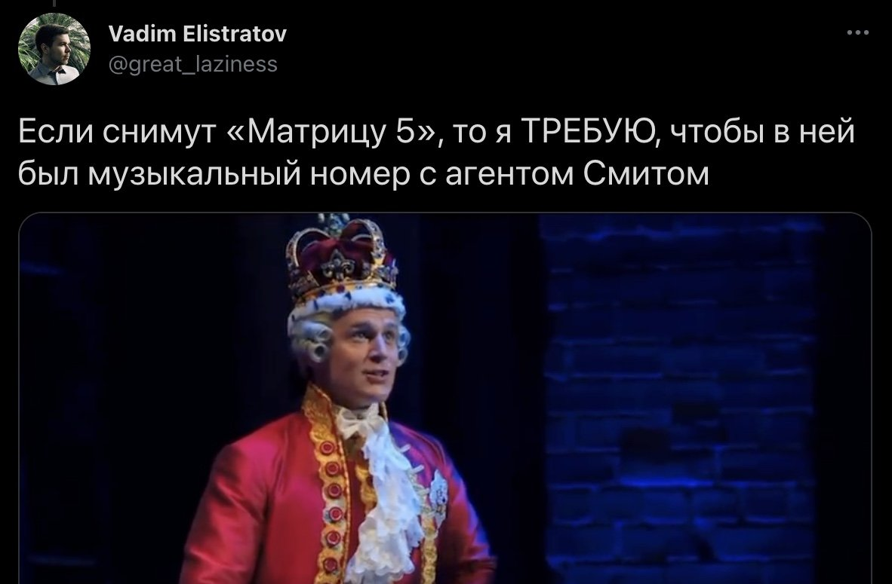

Привет, Саша! По сути, мои подарочные тексты к твоим дням рождения превратились в ежегодную рубрику «музыкант, которым я впечатлился в уходящем году» :)
Ещё давно в диснеевском мультфильме «Моана» мне так понравились песни (особенно одна, «How Far I'll Go»), что после просмотра полез в стриминг переслушать их. При этом не мог даже объяснить, чем именно понравилось. Чаще всего от диснеевских песен мне скучно: возникает ощущение работы по трафарету, когда можно заменить одного автора на другого, и никто не заметит. А тут всё вроде бы тоже укладывается в формулу — но цепляли и исполнение, и материал.

Тогда я даже не знал, что «How Far I'll Go» была номинирована на «Оскар», а на ютубе у неё под миллиард просмотров (то есть зацепила она вообще-то далеко не только меня). В стриминге тогда обнаружил, что российским пользователям песни «Моаны» доступны в блёклых версиях из русскоязычного дубляжа (порадовал там только Илья Лагутенко в роли гигантского краба). В итоге я про всё это просто забыл.
А в этом году послушал мюзикл «Гамильтон», безумно впечатлился, захотел узнать «что ещё сделал Лин-Мануэль Миранда», открыл Википедию и обнаружил, что песни из «Моаны» сочинил он. В этот момент всё встало на свои места. Действительно, этого автора нельзя просто взять и заменить другим — другого такого в мире нет.
Почему? Миранда поражает меня не только талантом, но и разностороннестью: он хорош одновременно в очень разном.
Для начала просто скопипащу с его страницы в Википедии: «американский актёр, певец, автор песен, рэпер, постановщик, драматург, продюсер и кинорежиссёр».
В случае с «Гамильтоном» он сам придумал и продумал идею, сам сочинил все песни, а затем в бродвейской постановке сам же исполнял главную роль. И получился один из главных мюзиклов XXI века, причём благодаря всем этим составляющим: и идее, и истории, и текстам, и мелодиям, и исполнительской харизме. Ещё на стадии черновика он практически в одиночку (с минимальным аккомпанементом) исполнял первую песню в Белом доме перед Обамой — и даже без мощи бродвейской постановки это уже производило впечатление.

Конечно, было бы неправильно приписывать все заслуги «Гамильтона» исключительно Миранде. Другие исполнители в бродвейской постановке тоже яркие, и у кого-то вокальные данные куда мощнее Миранды, а кто-то справляется с быстрым речитативом проворнее. Но даже там, где сияют другие артисты, ощущается его рука. Скажем, зная, что в постановке поучаствует техничный рэпер Дэвид Диггз, Миранда намеренно добавил в его роль пулемётные строчки, которые сам бы не осилил зачитать. Подсвечивать способности других — это тоже важная способность.
Тут может создаться впечатление эгоманьяка, которому необходимо, чтобы всё вращалось вокруг него. Но стоит вспомнить ту же «Моану», где он был лишь автором песен в чужом мультфильме, подстраивался под заданные рамки и оставался в тени. Или «Звёздные войны: пробуждение силы», где для нужд фильма сделал вообще песню на несуществующем языке.
Есть ещё и промежуточная ситуация с мультфильмом «Виво», где он озвучил главного героя (животное кинкажу): самого Миранду в кадре не видно, но он одним голосом тянет одеяло на себя, и узнать его тут легко.

Ну хорошо, он многостаночник с узнаваемой манерой и может оказываться по обе стороны камеры, но мало ли у нас таких было? Вуди Аллен вот тоже горазд снять себя в своём фильме по своему сценарию, тоже совмещал Голливуд с Бродвеем, и его тоже узнаешь за версту. Но с Мирандой особенно интересно, что его разностороннесть не заканчивается на выполняемых ролях: он как сочинитель черпает из очень разных источников.
Одна бросающаяся в глаза составляющая — хип-хоп. О «Гамильтоне» часто говорят как об экспериментальном привнесенении речитатива в мюзиклы. Но мне кажется, что для самого Миранды это не эксперимент, а совершенно естественный шаг. Он не «решил привнести хип-хоп» — он сам и есть хип-хоп. Если Валерия Гай-Германика для убедительности речитативных вставок в сериале «Бонус» привлекала рэпера Дуню, то Миранде не нужно никого привлекать, он сам кого хочешь проконсультирует.

Рифмы и панчи, флоу и биты — всё это он понимает отлично. Поскольку главная цель мюзикла — рассказать связную историю, тут не можешь слишком удариться в многосложные рифмы в ущерб нарративу, но даже в таких ограничивающих условиях он иногда рифмует строчки чуть ли не целиком:
Hamilton faces an endless uphill climb
Hamilton's pace is relentless, he wastes no time
Строка «Heard you mother say "come again?"» — это игра слов про мамку, которая могла бы прозвучать в современном диссе, а вместо это ввёрнута в речь персонажа XVIII века. А дискуссии американских отцов-основателей у него выглядят как рэп-батлы.
При этом сам Миранда не участвует в батлах, не выпустил ни одного сольного альбома, не гастролирует с концертами — то есть де-юре он даже не входит в число рэперов. Но в то же время, по-моему, де-факто он один из лучших рэперов планеты.
Одного этого мне уже было бы достаточно для восторгов. Но у других рэперов нет того, что есть у него: он настолько же хорошо ощущает себя в «традиционной» мюзикловой музыке. Он не пытается сбросить с корабля современности бродвейские традиции, заменив их хип-хопом — наоборот, он их любит. Его вокальные данные ограничивают его как исполнителя, но там, где поют другие герои, он может дать им абсолютно классическую песню — и сделать её офигенной. Джонатан Грофф у него так поёт за короля Георга, что участие Гроффа в новой «Матрице» вызывает такую реакцию:

А ещё интереснее, что песни у него не делятся строго на «певучие» и «речитативные» — одно может легко переходить в другое в любой момент. В обоих жанрах он как рыба в воде, и он даже не пытается разлить их по двум разным аквариумам, а сливает в единое море и свободно плавает по нему.
И более того: двумя жанрами он не ограничивается, периодически заходя на ещё какие-то территории. Одна из моих любимых песен у него — «Wait for It», отходящая от общей канвы куда-то в сторону аренби. В итоге её даже перепевал Ашер — и, по-моему, у Ашера получилось заметно хуже оригинала. С моей точки зрения, тут Миранда пришёл на чужую поляну и даже на ней всех убрал.

И вот что ещё: «Wait for It» хороша не только по звуку. Да, её вполне можно слушать отдельно от мюзикла как самодостаточное произведение, можно ставить на радио, перепевать, и она отлично работает в этом качестве. И мюзикл вроде как можно послушать без неё, там сюжетно ничего не происходит. Но по-настоящему сияет она для меня как раз в контексте мюзикла. В этой песне дают слово антагонисту, показывают мир его глазами — и если до этой песни он вызывал у меня негатив, то дальше хотелось ему сопереживать.
Миранда вообще хорошо работает и на этом уровне. У него проработанные персонажи (которых не делятся на «хороших и плохих», даже главный герой не вполне героизируется). У него отлично с драматургией: он смог найти персонажа из школьного учебника истории (казалось бы, что может быть скучнее для молодёжи из тиктока) и подать его так, что теперь молодёжь снимает по этому тысячи тиктоков. У него разные песни мюзикла хорошо работают на перекличках друг с другом: где-то это простые репризы, но где-то не с первого прослушивания замечаешь, что слова «just you wait» тут встречаются то как бахвальство, то как угроза.
А отдельно мне нравится, как Миранда работает с «повесточкой». Сейчас принято считать, что фильмы стали продвигать социальные идеи и это обязательно убивает творчество (словно «Броненосец "Потёмкин"» не продвигал социальные идеи ещё сто лет назад и словно это помешало ему стать шедевром). Да, есть фильмы, где меня самого это раздражает — но считаю, что в случае «Гамильтона» это только улучшило мюзикл в творческом отношении.
Безусловно, тут не упустят случая напомнить, что освобождение от Британии ещё не давало освобождения рабам. Но в целом вместо монотонного вдалбливания «что такое хорошо и что такое плохо» Миранда работает отдельными яркими мазками. Будучи пуэрториканского происхождения, понятно, какую сторону он занимает в американской дискуссии о мигрантах. И у него Гамильтон и Лафайет, также родившиеся за пределами США, перед решающим боем за независимость замечают: «Immigrants: we get the job done».
Это как раз рэперская способность панчить: одной хлёсткой строчкой одновременно и напомнить «США обязаны мигрантам самим своим существованием», и высказаться про нынешний день, где мигранты выполняют грязную работу, пока коренное население ругает их в интернетах. Если не путаю, на живых исполнениях «Гамильтона» пришлось удлинить музыкальный проигрыш после этой фразы, потому что зрители так бурно реагировали, что становились не слышны следующие строки.
Или вот — героиня цитирует Декларацию независимости и добавляет от себя:
«"We hold these truths to be self-evident
That all men are created equal"
And when I meet Thomas Jefferson I'm 'a compel him
To include women in the sequel»
По-моему, офигенно: одновременно и привести главный американский текст вполне восхищённо, и в то же время добавить к нему феминистскую позицию так, чтобы вместе это звучало остроумно, а не превращалось в занудную лекцию. Миранда не борется с привычным пониманием истории (кстати, в США многие хейтят его за это с позиций «все эти отцы-основатели были ужасными рабовладельцами»), а органично дополняет его современным взглядом — так же, как органично дополняет бродвейский звук речитативом.
Не знаю, насколько всё перечисленное мной может понравиться тебе. Но вот что мне кажется неоспоримым: если теперь, со всем этим контекстом про Миранду, вернуться к песне из «Моаны», то не остаётся вопросов «почему песни этого автора могут выделяться на фоне других», правда?
Вероятно, текст создаёт впечатление, что я переслушал и пересмотрел всё, к чему Миранда имеет хоть какое-то отношение. На самом деле это совершенно не так.
Я даже не смотрел официальную видеозапись «Гамильтона», а только слышал песни (поэтому в этом тексте они проиллюстрированы фанатскими видео). Но там причина техническая: принципиально не пиратствую, а Disney+ в России пока что недоступен. А вот почему до сих пор не послушал другой его мюзикл «In the Heights», не посмотрел его фильм «Tick, tick… BOOM!», не сходил недавно на мультфильм «Энканто» с его песнями?
Ну, наверное, когда-то доберусь и до них, но спешки не ощущаю. Потому что при всей крутизне Миранды границы есть и у неё — и не думаю, что в «In the Heights» услышу что-то такое, чего в «Гамильтоне» совсем не было. Думаю, как Вуди Аллен всю жизнь снимает один фильм, так и он всю жизнь будет развивать свой бродвейско-речитативный гибрид. Это не обязательно плохо, на того же Вуди многие каждый год с удовольствием ходят, просто мне в своё время оказалось вполне достаточно «Манхэттена» и «Энни Холл».
А напоследок вот что. Песня «Hurricane», возможно, и не самая лучшая у него, но есть причина, по которой она мне близка.

То, что Гамильтон писал тексты, определило всю его жизнь. То, что Миранда пишет тексты песен, определило всю его жизнь. Поэтому, когда Миранда сел писать про Гамильтона, в этом сочинительстве он увидел близкую себе тему и подчеркивал её. И в «Hurrycane» есть слова о текстах-как-действиях: о текстах как о способе выбраться из нищеты, покорить возлюбленную, изменить историю целой страны. Интересно, что даже словосочетания тут строит так, чтобы сочинение теста в них получалось активным действием: «I wrote my way out», «I wrote financial systems into existence».
И я как человек, который тоже всю жизнь пишет тексты, хочу сказать, что песня такими формулировками отлично передаёт мои ощущения. Всё так, текст может быть далеко не просто буквами, им можно много что делать.
Вот и сейчас, например, с помощью текста я создаю подарок на день рождения, извините за неровный почерк, дописываю уже в метро по пути.